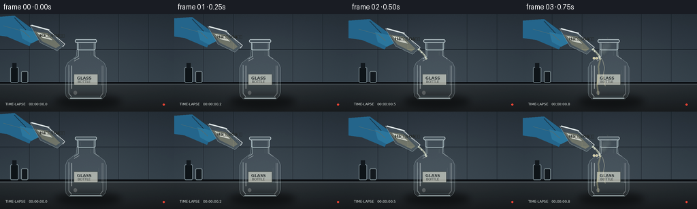
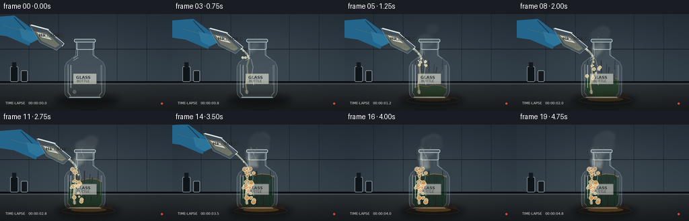
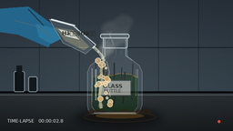

CODING AGENTS AS PIXEL WORLD MODELS
traex/GPT-5.6-Sol · material_0039
点击播放 · 原生 RGB 像素
逐轮保存的候选
回放视频、检查图与代码变化。
每份候选均可单独播放。实际图片检查记录在下方工具轨迹中。
候选 01播放与检查图
点击播放 · 原生 RGB 像素

展开代码变化
--- 上一保存版本
+++ 本次保存版本
@@ -0,0 +1,245 @@
+from pathlib import Path
+import math, random
+import numpy as np
+from PIL import Image, ImageDraw, ImageFont, ImageFilter
+import cv2
+import artifact_io
+
+CASE = Path(__file__).resolve().parent
+W,H,N = 256,144,20
+S=3
+random.seed(39)
+
+try:
+ FONT = ImageFont.truetype('/usr/share/fonts/truetype/dejavu/DejaVuSans.ttf', 5*S)
+ FONT_B = ImageFont.truetype('/usr/share/fonts/truetype/dejavu/DejaVuSans-Bold.ttf', 6*S)
+except:
+ FONT=FONT_B=ImageFont.load_default()
+
+def scpts(pts): return [(int(x*S),int(y*S)) for x,y in pts]
+def color(c): return tuple(int(v) for v in c) if isinstance(c, tuple) else c
+def clean(kw):
+ for k in ('fill','outline'):
+ if k in kw: kw[k]=color(kw[k])
+ return kw
+def ellipse(d, box, **kw): d.ellipse(tuple(int(v*S) for v in box), **clean(kw))
+def line(d, pts, fill, width=1, joint='curve'): d.line(scpts(pts), fill=color(fill), width=max(1,int(width*S)), joint=joint)
+def poly(d, pts, **kw): d.polygon(scpts(pts), **clean(kw))
+def rect(d, box, **kw): d.rectangle(tuple(int(v*S) for v in box), **clean(kw))
+def roundrect(d, box, rad, **kw): d.rounded_rectangle(tuple(int(v*S) for v in box), radius=int(rad*S), **clean(kw))
+
+def rgba_layer(): return Image.new('RGBA',(W*S,H*S),(0,0,0,0))
+
+def make_background(frame):
+ # Laboratory backsplash and worktop, with a subtle time-lapse exposure fluctuation.
+ y,x=np.mgrid[0:H*S,0:W*S]
+ flick=1.5*math.sin(frame*.72)
+ base=np.zeros((H*S,W*S,3),np.float32)
+ top=y < 102*S
+ grad=(y/(102*S))
+ base[...,0]=np.where(top, 39+15*grad+flick, 42-15*(y-102*S)/(42*S))
+ base[...,1]=np.where(top, 48+17*grad+flick, 48-18*(y-102*S)/(42*S))
+ base[...,2]=np.where(top, 56+18*grad+flick, 52-20*(y-102*S)/(42*S))
+ # soft pool of light around experiment
+ glow=np.exp(-(((x-130*S)/(105*S))**2+((y-66*S)/(70*S))**2))
+ base += glow[...,None]*10
+ rng=np.random.default_rng(450+frame)
+ base += rng.normal(0,0.65,base.shape[:2])[...,None]
+ img=Image.fromarray(np.uint8(np.clip(base,0,255)),'RGB').convert('RGBA')
+ d=ImageDraw.Draw(img,'RGBA')
+ # tiled lab wall
+ for xx in [43,87,174,218]: line(d,[(xx,0),(xx,102)],(17,23,28,85),.65)
+ line(d,[(0,52),(256,52)],(18,24,29,80),.7)
+ line(d,[(0,101),(256,101)],(9,12,15,220),2)
+ line(d,[(0,104),(256,104)],(95,105,108,65),.7)
+ # blurred bottle shadow
+ sh=rgba_layer(); sd=ImageDraw.Draw(sh,'RGBA')
+ ellipse(sd,(81,119,178,139),fill=(0,0,0,110))
+ sh=sh.filter(ImageFilter.GaussianBlur(5*S)); img.alpha_composite(sh)
+ # left background rack silhouettes
+ d=ImageDraw.Draw(img,'RGBA')
+ roundrect(d,(15,78,27,101),2,fill=(19,25,29,160),outline=(122,138,145,30),width=1*S)
+ rect(d,(18,72,24,80),fill=(23,29,34,180))
+ roundrect(d,(31,84,41,101),2,fill=(24,30,35,130),outline=(130,145,150,24),width=1*S)
+ return img
+
+def draw_bottle(img, f, reaction):
+ # Bottle is built in translucent layers so the rear wall remains visible through it.
+ bottle=rgba_layer(); d=ImageDraw.Draw(bottle,'RGBA')
+ outer=[(101,125),(97,121),(96,115),(96,79),(99,72),(108,65),(112,62),(113,50),(139,50),(140,62),(144,65),(153,72),(156,79),(156,115),(154,121),(150,125)]
+ poly(d,outer,fill=(188,212,218,24),outline=(219,239,242,170))
+ # side thickness and base
+ line(d,[(101,75),(101,117),(105,122)],(230,246,247,110),1.1)
+ line(d,[(151,76),(151,117),(147,122)],(240,250,250,85),1)
+ line(d,[(103,124),(149,124)],(220,239,240,150),2)
+ line(d,[(106,121),(146,121)],(107,135,141,90),1)
+ # neck and lip
+ roundrect(d,(113,39,140,53),2,fill=(178,207,214,25),outline=(218,239,242,180),width=1*S)
+ roundrect(d,(110,37,142,42),2,fill=(168,196,203,45),outline=(231,246,248,190),width=1*S)
+ line(d,[(115,43),(115,62),(109,66)],(230,246,248,120),1)
+ line(d,[(138,43),(138,61),(145,66)],(235,249,250,100),1)
+ # bottle interior darkens in a timelapse-like reaction
+ if reaction>0:
+ # amber-to-near-black, uneven fluid/deposits inside lower bottle
+ level=116-41*min(1,reaction*1.14)
+ dark=int(55-27*reaction); amber=int(105-52*reaction)
+ inner=[(102,level+4),(106,level),(147,level),(151,level+4),(151,117),(147,122),(105,122),(101,117)]
+ poly(d,inner,fill=(dark,amber,37,int(60+105*reaction)))
+ # irregular upper boundary
+ line(d,[(104,level+2),(112,level-1),(122,level+1),(132,level-2),(145,level),(150,level+3)],(191,139,55,100+70*reaction),1.2)
+ # clinging blackened trails within front silhouette
+ for j in range(7):
+ xx=105+j*6.8+2*math.sin(j*2.1)
+ top=69+j%3*5
+ end=min(121, top+8+reaction*(30+(j%4)*7))
+ col=(38,31,24,int(35+115*reaction))
+ line(d,[(xx,top),(xx+math.sin(j)*2,end)],col,1.2+(j%2)*.5)
+ # cold highlights that remain visible even when contents blacken
+ line(d,[(105,76),(105,110)],(245,252,252,115),1.5)
+ line(d,[(109,69),(116,65)],(247,253,253,130),1)
+ line(d,[(149,76),(149,105)],(244,251,251,65),.8)
+ ellipse(d,(108,113,113,119),fill=(246,251,249,65))
+ # small paper label, increasingly stained but readable
+ stain=int(35*reaction)
+ roundrect(d,(108,88,144,105),1.4,fill=(213-stain,216-stain,205-stain,178),outline=(87,95,91,125),width=1*S)
+ d.text((113*S,91*S),'GLASS',font=FONT_B,fill=(48,54,53,210))
+ d.text((114*S,97*S),'BOTTLE',font=FONT,fill=(58,62,59,205))
+ # tiny specular scratches
+ for xx,yy,ll in [(102,84,9),(145,83,7),(133,55,6),(118,45,5)]: line(d,[(xx,yy),(xx,yy+ll)],(255,255,255,45),.5)
+ img.alpha_composite(bottle)
+
+def draw_pourer(img,f):
+ # Pour lasts for most of the middle of the five-second timelapse.
+ present = f <= 15
+ pouring = 2 <= f <= 14
+ if not present: return None
+ # beaker settles, tips, then lifts away
+ if f<2: off=(-10+f*5,-5+f*2); ang=-2+f*5
+ elif f<=12: off=(0,0); ang=9+min(4,(f-2)*.5)
+ else: off=((f-12)*-4,(f-12)*-4); ang=13-(f-12)*2
+ layer=rgba_layer(); d=ImageDraw.Draw(layer,'RGBA')
+ ox,oy=off
+ # blue nitrile glove and forearm coming from upper-left
+ poly(d,[(-8+ox,10+oy),(31+ox,7+oy),(63+ox,31+oy),(53+ox,52+oy),(20+ox,38+oy),(-8+ox,34+oy)],fill=(40,105,142,245))
+ # creases and fingers gripping beaker
+ poly(d,[(39+ox,26+oy),(64+ox,32+oy),(68+ox,42+oy),(56+ox,48+oy),(43+ox,41+oy)],fill=(47,120,158,250))
+ line(d,[(15+ox,22+oy),(44+ox,30+oy),(54+ox,39+oy)],(112,179,200,110),1.2)
+ line(d,[(31+ox,10+oy),(48+ox,28+oy)],(17,66,96,130),1)
+ # tilted glass beaker, mouth/spout toward the bottle
+ body=[(54+ox,21+oy),(82+ox,28+oy),(103+ox,51+oy),(94+ox,59+oy),(69+ox,47+oy)]
+ poly(d,body,fill=(200,226,231,35),outline=(225,245,247,190))
+ # colorless acid appears by refraction as a pale warm volume
+ acid=[(60+ox,30+oy),(80+ox,33+oy),(98+ox,51+oy),(92+ox,55+oy),(72+ox,45+oy)]
+ poly(d,acid,fill=(225,219,171,88))
+ line(d,[(56+ox,21+oy),(82+ox,28+oy)],(245,252,252,220),2)
+ line(d,[(80+ox,28+oy),(105+ox,49+oy),(102+ox,53+oy)],(245,252,252,180),1.3)
+ # label and hazard diamond
+ poly(d,[(63+ox,31+oy),(79+ox,35+oy),(88+ox,44+oy),(72+ox,40+oy)],fill=(237,239,224,205),outline=(80,86,79,120))
+ d.text(((68+ox)*S,(33+oy)*S),'HâSOâ',font=FONT_B,fill=(38,41,37,235))
+ img.alpha_composite(layer)
+ return ((102+ox,51+oy),(114,67)) if pouring else None
+
+def draw_stream(img,f,ends):
+ if not ends:return
+ (x0,y0),(x1,y1)=ends
+ layer=rgba_layer();d=ImageDraw.Draw(layer,'RGBA')
+ # viscous slightly bowed stream, thicker after pour gets underway
+ k=min(1,(f-1)/3)*min(1,(15-f)/2)
+ pts=[]
+ for q in np.linspace(0,1,18):
+ x=x0*(1-q)+x1*q+3.1*math.sin(math.pi*q)
+ y=y0*(1-q)+y1*q+1.2*math.sin(math.pi*q)
+ pts.append((x,y))
+ line(d,pts,(218,225,188,120),2.3+1.3*k)
+ line(d,[(x+.5,y-.3) for x,y in pts],(250,253,235,185),.75)
+ # moving bright beads stress that this is a liquid pour, not a solid rod
+ for j in range(2):
+ q=((f*.39+j*.47)%1)
+ x=x0*(1-q)+x1*q+3.1*math.sin(math.pi*q); y=y0*(1-q)+y1*q+1.2*math.sin(math.pi*q)
+ ellipse(d,(x-1,y-1,x+1.3,y+1.6),fill=(249,252,231,185))
+ img.alpha_composite(layer)
+
+def draw_reaction(img,f):
+ reaction=max(0,min(1,(f-3)/11))
+ if f<3:return
+ layer=rgba_layer();d=ImageDraw.Draw(layer,'RGBA')
+ # acid sheet spilling down the outside shoulder
+ alpha=int(85+90*reaction)
+ line(d,[(114,66),(111,77),(112,90),(109,104),(111,119)],(211,203,148,alpha),2.5+reaction)
+ line(d,[(117,67),(120,79),(118,91),(121,106)],(244,238,201,100),1.1)
+ # vigorous froth begins at impact and walks down the bottle
+ bubbles=[]
+ count=int(4+26*reaction)
+ for j in range(count):
+ rr=random.Random(1000+j)
+ progress=min(1,reaction*1.35)
+ yy=65+rr.random()*56*progress
+ center=113+4*math.sin(yy*.18)+rr.uniform(-6,7)
+ rad=rr.uniform(1.1,3.5)*(0.65+0.6*reaction)
+ bubbles.append((center,yy,rad,rr.random()))
+ for x,y,r,v in bubbles:
+ col=(240,230-int(70*reaction),169-int(90*reaction),150+int(v*80))
+ ellipse(d,(x-r,y-r,x+r,y+r),fill=col,outline=(255,246,210,190),width=max(1,S))
+ if r>2: ellipse(d,(x-r*.35,y-r*.45,x+r*.05,y-r*.05),fill=(255,255,236,150))
+ # corrosive/charred patch on front and pooling at the bottle foot
+ if reaction>.18:
+ rr=np.random.default_rng(32)
+ pts=[(100,119)]
+ for x in np.linspace(100,164,18): pts.append((x,121+rr.uniform(-2,2)))
+ pts += [(169,129),(93,130)]
+ poly(d,pts,fill=(48,35,22,int(40+150*reaction)))
+ ellipse(d,(92,123,171,134),fill=(32,28,24,int(35+110*reaction)),outline=(153,115,54,80))
+ ellipse(d,(105,124,158,130),fill=(151,100,34,int(35+75*reaction)))
+ img.alpha_composite(layer)
+
+ # steam / sulfuric mist: soft, turbulent plumes drifting upward and right.
+ smoke=rgba_layer();sd=ImageDraw.Draw(smoke,'RGBA')
+ count=int(3+17*reaction)
+ for j in range(count):
+ rr=random.Random(870+j)
+ age=(reaction*1.8 + j/count*.9 + .05*math.sin(f+j))%1.15
+ x=115 + rr.uniform(-7,10)+age*(8+rr.uniform(-3,9))
+ y=66-age*(24+rr.uniform(3,22))
+ rad=(2.5+age*6)*(0.7+rr.random()*.65)
+ a=int((45+75*reaction)*(1-age/1.25))
+ ellipse(sd,(x-rad*1.3,y-rad,x+rad*1.3,y+rad),fill=(224,229,218,max(0,a)))
+ smoke=smoke.filter(ImageFilter.GaussianBlur(2.3*S))
+ img.alpha_composite(smoke)
+ # sharp foreground wisps
+ wis=rgba_layer();wd=ImageDraw.Draw(wis,'RGBA')
+ for j in range(3):
+ phase=f*.28+j*1.7
+ pts=[]
+ for k in range(16):
+ yy=65-k*2.1; xx=117+j*4 + math.sin(phase+k*.38)*(2+k*.16)
+ pts.append((xx,yy))
+ line(wd,pts,(229,234,221,int(40+55*reaction)),.7+reaction*.5)
+ wis=wis.filter(ImageFilter.GaussianBlur(.5*S));img.alpha_composite(wis)
+
+def draw_time_stamp(img,f):
+ # unobtrusive timelapse camera overlay reinforces elapsed-time compression.
+ d=ImageDraw.Draw(img,'RGBA')
+ d.text((8*S,130*S),f'TIME-LAPSE 00:00:{f/4:04.1f}',font=FONT,fill=(222,229,226,135))
+ ellipse(d,(239,132,242,135),fill=(231,70,55,185))
+
+frames=[]
+for f in range(N):
+ img=make_background(f)
+ reaction=max(0,min(1,(f-3)/11))
+ draw_bottle(img,f,reaction)
+ ends=draw_pourer(img,f)
+ draw_stream(img,f,ends)
+ draw_reaction(img,f)
+ draw_time_stamp(img,f)
+ img=img.convert('RGB').resize((W,H),Image.Resampling.LANCZOS)
+ # cinematic but restrained contrast/clarity
+ arr=np.asarray(img).astype(np.float32)
+ arr=(arr-128)*1.045+128
+ frames.append(np.uint8(np.clip(arr,0,255)))
+frames=np.stack(frames)
+artifact_io.save(frames,CASE)
+# convenient standard RGB preview video in addition to contract artifacts
+writer=cv2.VideoWriter(str(CASE/'output.mp4'),cv2.VideoWriter_fourcc(*'mp4v'),4.0,(W,H))
+for fr in frames: writer.write(cv2.cvtColor(fr,cv2.COLOR_RGB2BGR))
+writer.release()
+print('saved',frames.shape,frames.dtype)
候选 02播放与检查图
点击播放 · 原生 RGB 像素


展开代码变化
--- 上一保存版本
+++ 本次保存版本
@@ -45,7 +45,7 @@
base += glow[...,None]*10
rng=np.random.default_rng(450+frame)
base += rng.normal(0,0.65,base.shape[:2])[...,None]
- img=Image.fromarray(np.uint8(np.clip(base,0,255)),'RGB').convert('RGBA')
+ img=Image.fromarray(np.uint8(np.clip(base,0,255))).convert('RGBA')
d=ImageDraw.Draw(img,'RGBA')
# tiled lab wall
for xx in [43,87,174,218]: line(d,[(xx,0),(xx,102)],(17,23,28,85),.65)
可观测工具轨迹
实际执行的命令与返回图片。
命令 1exit 0
/bin/bash -lc "cat prompt.txt && printf '\\n---RULES---\\n' && cat GENERATION_RULES.md && printf '\\n---SPEC---\\n' && cat task_spec.json"
命令 2exit 0
/bin/bash -lc "find . -maxdepth 2 -type f -printf '%p\\n' | sort"
命令 3exit 0
/bin/bash -lc "which ffmpeg; which python3; python3 - <<'PY'
try:
import cv2; print('cv2',cv2.__version__)
except Exception as e: print('no cv2',e)
try:
from PIL import Image; print('PIL ok')
except Exception as e: print('no PIL',e)
PY"命令 4exit 0
/bin/bash -lc 'cat artifact_io.py'
命令 5exit 1
/bin/bash -lc "cat > generate.py <<'PY'
from pathlib import Path
import math, random
import numpy as np
from PIL import Image, ImageDraw, ImageFont, ImageFilter
import cv2
import artifact_io
CASE = Path(__file__).resolve().parent
W,H,N = 256,144,20
S=3
random.seed(39)
try:
FONT = ImageFont.truetype('/usr/share/fonts/truetype/dejavu/DejaVuSans.ttf', 5*S)
FONT_B = ImageFont.truetype('/usr/share/fonts/truetype/dejavu/DejaVuSans-Bold.ttf', 6*S)
except:
FONT=FONT_B=ImageFont.load_default()
def scpts(pts): return [(int(x*S),int(y*S)) for x,y in pts]
def ellipse(d, box, **kw): d.ellipse(tuple(int(v*S) for v in box), **kw)
def line(d, pts, fill, width=1, joint='curve'): d.line(scpts(pts), fill=fill, width=max(1,int(width*S)), joint=joint)
def poly(d, pts, **kw): d.polygon(scpts(pts), **kw)
def rect(d, box, **kw): d.rectangle(tuple(int(v*S) for v in box), **kw)
def roundrect(d, box, rad, **kw): d.rounded_rectangle(tuple(int(v*S) for v in box), radius=int(rad*S), **kw)
def rgba_layer(): return Image.new('RGBA',(W*S,H*S),(0,0,0,0))
def make_background(frame):
# Laboratory backsplash and worktop, with a subtle time-lapse exposure fluctuation.
y,x=np.mgrid[0:H*S,0:W*S]
flick=1.5*math.sin(frame*.72)
base=np.zeros((H*S,W*S,3),np.float32)
top=y < 102*S
grad=(y/(102*S))
base[...,0]=np.where(top, 39+15*grad+flick, 42-15*(y-102*S)/(42*S))
base[...,1]=np.where(top, 48+17*grad+flick, 48-18*(y-102*S)/(42*S))
base[...,2]=np.where(top, 56+18*grad+flick, 52-20*(y-102*S)/(42*S))
# soft pool of light around experiment
glow=np.exp(-(((x-130*S)/(105*S))**2+((y-66*S)/(70*S))**2))
base += glow[...,None]*10
rng=np.random.default_rng(450+frame)
base += rng.normal(0,0.65,base.shape[:2])[...,None]
img=Image.fromarray(np.uint8(np.clip(base,0,255)),'RGB').convert('RGBA')
d=ImageDraw.Draw(img,'RGBA')
# tiled lab wall
for xx in [43,87,174,218]: line(d,[(xx,0),(xx,102)],(17,23,28,85),.65)
line(d,[(0,52),(256,52)],(18,24,29,80),.7)
line(d,[(0,101),(256,101)],(9,12,15,220),2)
line(d,[(0,104),(256,104)],(95,105,108,65),.7)
# blurred bottle shadow
sh=rgba_layer(); sd=ImageDraw.Draw(sh,'RGBA')
ellipse(sd,(81,119,178,139),fill=(0,0,0,110))
sh=sh.filter(ImageFilter.GaussianBlur(5*S)); img.alpha_composite(sh)
# left background rack silhouettes
d=ImageDraw.Draw(img,'RGBA')
roundrect(d,(15,78,27,101),2,fill=(19,25,29,160),outline=(122,138,145,30),width=1*S)
rect(d,(18,72,24,80),fill=(23,29,34,180))
roundrect(d,(31,84,41,101),2,fill=(24,30,35,130),outline=(130,145,150,24),width=1*S)
return img
def draw_bottle(img, f, reaction):
# Bottle is built in translucent layers so the rear wall remains visible through it.
bottle=rgba_layer(); d=ImageDraw.Draw(bottle,'RGBA')
outer=[(101,125),(97,121),(96,115),(96,79),(99,72),(108,65),(112,62),(113,50),(139,50),(140,62),(144,65),(153,72),(156,79),(156,115),(154,121),(150,125)]
poly(d,outer,fill=(188,212,218,24),outline=(219,239,242,170))
# side thickness and base
line(d,[(101,75),(101,117),(105,122)],(230,246,247,110),1.1)
line(d,[(151,76),(151,117),(147,122)],(240,250,250,85),1)
line(d,[(103,124),(149,124)],(220,239,240,150),2)
line(d,[(106,121),(146,121)],(107,135,141,90),1)
# neck and lip
roundrect(d,(113,39,140,53),2,fill=(178,207,214,25),outline=(218,239,242,180),width=1*S)
roundrect(d,(110,37,142,42),2,fill=(168,196,203,45),outline=(231,246,248,190),width=1*S)
line(d,[(115,43),(115,62),(109,66)],(230,246,248,120),1)
line(d,[(138,43),(138,61),(145,66)],(235,249,250,100),1)
# bottle interior darkens in a timelapse-like reaction
if reaction>0:
# amber-to-near-black, uneven fluid/deposits inside lower bottle
level=116-41*min(1,reaction*1.14)
dark=int(55-27*reaction); amber=int(105-52*reaction)
inner=[(102,level+4),(106,level),(147,level),(151,level+4),(151,117),(147,122),(105,122),(101,117)]
poly(d,inner,fill=(dark,amber,37,60+105*reaction))
# irregular upper boundary
line(d,[(104,level+2),(112,level-1),(122,level+1),(132,level-2),(145,level),(150,level+3)],(191,139,55,100+70*reaction),1.2)
# clinging blackened trails within front silhouette
for j in range(7):
xx=105+j*6.8+2*math.sin(j*2.1)
top=69+j%3*5
end=min(121, top+8+reaction*(30+(j%4)*7))
col=(38,31,24,int(35+115*reaction))
line(d,[(xx,top),(xx+math.sin(j)*2,end)],col,1.2+(j%2)*.5)
# cold highlights that remain visible even when contents blacken
line(d,[(105,76),(105,110)],(245,252,252,115),1.5)
line(d,[(109,69),(116,65)],(247,253,253,130),1)
line(d,[(149,76),(149,105)],(244,251,251,65),.8)
ellipse(d,(108,113,113,119),fill=(246,251,249,65))
# small paper label, increasingly stained but readable
stain=int(35*reaction)
roundrect(d,(108,88,144,105),1.4,fill=(213-stain,216-stain,205-stain,178),outline=(87,95,91,125),width=1*S)
d.text((113*S,91*S),'GLASS',font=FONT_B,fill=(48,54,53,210))
d.text((114*S,97*S),'BOTTLE',font=FONT,fill=(58,62,59,205))
# tiny specular scratches
for xx,yy,ll in [(102,84,9),(145,83,7),(133,55,6),(118,45,5)]: line(d,[(xx,yy),(xx,yy+ll)],(255,255,255,45),.5)
img.alpha_composite(bottle)
def draw_pourer(img,f):
# Pour lasts for most of the middle of the five-second timelapse.
present = f <= 15
pouring = 2 <= f <= 14
if not present: return None
# beaker settles, tips, then lifts away
if f<2: off=(-10+f*5,-5+f*2); ang=-2+f*5
elif f<=12: off=(0,0); ang=9+min(4,(f-2)*.5)
else: off=((f-12)*-4,(f-12)*-4); ang=13-(f-12)*2
layer=rgba_layer(); d=ImageDraw.Draw(layer,'RGBA')
ox,oy=off
# blue nitrile glove and forearm coming from upper-left
poly(d,[(-8+ox,10+oy),(31+ox,7+oy),(63+ox,31+oy),(53+ox,52+oy),(20+ox,38+oy),(-8+ox,34+oy)],fill=(40,105,142,245))
# creases and fingers gripping beaker
poly(d,[(39+ox,26+oy),(64+ox,32+oy),(68+ox,42+oy),(56+ox,48+oy),(43+ox,41+oy)],fill=(47,120,158,250))
line(d,[(15+ox,22+oy),(44+ox,30+oy),(54+ox,39+oy)],(112,179,200,110),1.2)
line(d,[(31+ox,10+oy),(48+ox,28+oy)],(17,66,96,130),1)
# tilted glass beaker, mouth/spout toward the bottle
body=[(54+ox,21+oy),(82+ox,28+oy),(103+ox,51+oy),(94+ox,59+oy),(69+ox,47+oy)]
poly(d,body,fill=(200,226,231,35),outline=(225,245,247,190))
# colorless acid appears by refraction as a pale warm volume
acid=[(60+ox,30+oy),(80+ox,33+oy),(98+ox,51+oy),(92+ox,55+oy),(72+ox,45+oy)]
poly(d,acid,fill=(225,219,171,88))
line(d,[(56+ox,21+oy),(82+ox,28+oy)],(245,252,252,220),2)
line(d,[(80+ox,28+oy),(105+ox,49+oy),(102+ox,53+oy)],(245,252,252,180),1.3)
# label and hazard diamond
poly(d,[(63+ox,31+oy),(79+ox,35+oy),(88+ox,44+oy),(72+ox,40+oy)],fill=(237,239,224,205),outline=(80,86,79,120))
d.text(((68+ox)*S,(33+oy)*S),'HâSOâ',font=FONT_B,fill=(38,41,37,235))
img.alpha_composite(layer)
return ((102+ox,51+oy),(114,67)) if pouring else None
def draw_stream(img,f,ends):
if not ends:return
(x0,y0),(x1,y1)=ends
layer=rgba_layer();d=ImageDraw.Draw(layer,'RGBA')
# viscous slightly bowed stream, thicker after pour gets underway
k=min(1,(f-1)/3)*min(1,(15-f)/2)
pts=[]
for q in np.linspace(0,1,18):
x=x0*(1-q)+x1*q+3.1*math.sin(math.pi*q)
y=y0*(1-q)+y1*q+1.2*math.sin(math.pi*q)
pts.append((x,y))
line(d,pts,(218,225,188,120),2.3+1.3*k)
line(d,[(x+.5,y-.3) for x,y in pts],(250,253,235,185),.75)
# moving bright beads stress that this is a liquid pour, not a solid rod
for j in range(2):
q=((f*.39+j*.47)%1)
x=x0*(1-q)+x1*q+3.1*math.sin(math.pi*q); y=y0*(1-q)+y1*q+1.2*math.sin(math.pi*q)
ellipse(d,(x-1,y-1,x+1.3,y+1.6),fill=(249,252,231,185))
img.alpha_composite(layer)
def draw_reaction(img,f):
reaction=max(0,min(1,(f-3)/11))
if f<3:return
layer=rgba_layer();d=ImageDraw.Draw(layer,'RGBA')
# acid sheet spilling down the outside shoulder
alpha=int(85+90*reaction)
line(d,[(114,66),(111,77),(112,90),(109,104),(111,119)],(211,203,148,alpha),2.5+reaction)
line(d,[(117,67),(120,79),(118,91),(121,106)],(244,238,201,100),1.1)
# vigorous froth begins at impact and walks down the bottle
bubbles=[]
count=int(4+26*reaction)
for j in range(count):
rr=random.Random(1000+j)
progress=min(1,reaction*1.35)
yy=65+rr.random()*56*progress
center=113+4*math.sin(yy*.18)+rr.uniform(-6,7)
rad=rr.uniform(1.1,3.5)*(0.65+0.6*reaction)
bubbles.append((center,yy,rad,rr.random()))
for x,y,r,v in bubbles:
col=(240,230-int(70*reaction),169-int(90*reaction),150+int(v*80))
ellipse(d,(x-r,y-r,x+r,y+r),fill=col,outline=(255,246,210,190),width=max(1,S))
if r>2: ellipse(d,(x-r*.35,y-r*.45,x+r*.05,y-r*.05),fill=(255,255,236,150))
# corrosive/charred patch on front and pooling at the bottle foot
if reaction>.18:
rr=np.random.default_rng(32)
pts=[(100,119)]
for x in np.linspace(100,164,18): pts.append((x,121+rr.uniform(-2,2)))
pts += [(169,129),(93,130)]
poly(d,pts,fill=(48,35,22,int(40+150*reaction)))
ellipse(d,(92,123,171,134),fill=(32,28,24,int(35+110*reaction)),outline=(153,115,54,80))
ellipse(d,(105,124,158,130),fill=(151,100,34,int(35+75*reaction)))
img.alpha_composite(layer)
# steam / sulfuric mist: soft, turbulent plumes drifting upward and right.
smoke=rgba_layer();sd=ImageDraw.Draw(smoke,'RGBA')
count=int(3+17*reaction)
for j in range(count):
rr=random.Random(870+j)
age=(reaction*1.8 + j/count*.9 + .05*math.sin(f+j))%1.15
x=115 + rr.uniform(-7,10)+age*(8+rr.uniform(-3,9))
y=66-age*(24+rr.uniform(3,22))
rad=(2.5+age*6)*(0.7+rr.random()*.65)
a=int((45+75*reaction)*(1-age/1.25))
ellipse(sd,(x-rad*1.3,y-rad,x+rad*1.3,y+rad),fill=(224,229,218,max(0,a)))
smoke=smoke.filter(ImageFilter.GaussianBlur(2.3*S))
img.alpha_composite(smoke)
# sharp foreground wisps
wis=rgba_layer();wd=ImageDraw.Draw(wis,'RGBA')
for j in range(3):
phase=f*.28+j*1.7
pts=[]
for k in range(16):
yy=65-k*2.1; xx=117+j*4 + math.sin(phase+k*.38)*(2+k*.16)
pts.append((xx,yy))
line(wd,pts,(229,234,221,int(40+55*reaction)),.7+reaction*.5)
wis=wis.filter(ImageFilter.GaussianBlur(.5*S));img.alpha_composite(wis)
def draw_time_stamp(img,f):
# unobtrusive timelapse camera overlay reinforces elapsed-time compression.
d=ImageDraw.Draw(img,'RGBA')
d.text((8*S,130*S),f'TIME-LAPSE 00:00:{f/4:04.1f}',font=FONT,fill=(222,229,226,135))
ellipse(d,(239,132,242,135),fill=(231,70,55,185))
frames=[]
for f in range(N):
img=make_background(f)
reaction=max(0,min(1,(f-3)/11))
draw_bottle(img,f,reaction)
ends=draw_pourer(img,f)
draw_stream(img,f,ends)
draw_reaction(img,f)
draw_time_stamp(img,f)
img=img.convert('RGB').resize((W,H),Image.Resampling.LANCZOS)
# cinematic but restrained contrast/clarity
arr=np.asarray(img).astype(np.float32)
arr=(arr-128)*1.045+128
frames.append(np.uint8(np.clip(arr,0,255)))
frames=np.stack(frames)
artifact_io.save(frames,CASE)
# convenient standard RGB preview video in addition to contract artifacts
writer=cv2.VideoWriter(str(CASE/'output.mp4'),cv2.VideoWriter_fourcc(*'mp4v'),4.0,(W,H))
for fr in frames: writer.write(cv2.cvtColor(fr,cv2.COLOR_RGB2BGR))
writer.release()
print('saved',frames.shape,frames.dtype)
PY
python3 generate.py"命令 6exit 1
/bin/bash -lc "sed -i \"s/(dark,amber,37,60+105\\*reaction)/(dark,amber,37,int(60+105*reaction))/\" generate.py python3 generate.py"
命令 7exit 0
/bin/bash -lc 'python3 generate.py'
命令 8exit 0
/bin/bash -lc "python3 - <<'PY'
from pathlib import Path
p=Path('generate.py')
s=p.read_text()
s=s.replace(\"'HâÂÂSOâÂÂ'\", \"'H2SO4'\")
s=s.replace(\"Image.fromarray(np.uint8(np.clip(base,0,255)),'RGB')\", \"Image.fromarray(np.uint8(np.clip(base,0,255)))\")
p.write_text(s)
PY
python3 generate.py
python3 - <<'PY'
from pathlib import Path
import numpy as np
from PIL import Image
p=Path('.')
z=np.load(p/'pixels.npz')['pixels']
ims=sorted((p/'frames').glob('*.png'))
print('pixels',z.shape,z.dtype,'frames',len(ims),Image.open(ims[0]).mode,Image.open(ims[0]).size)
print('artifacts',[(x.name,x.stat().st_size) for x in [p/'pixels.npz',p/'index.html',p/'inspection.png',p/'output.mp4',p/'generate.py']])
PY"视觉工具实际返回图片 1

视觉工具实际返回图片 2

保存候选 2 份；完成命令 8 次；可验证图片返回 2 张。原始 API 响应与完整日志保留在本地。